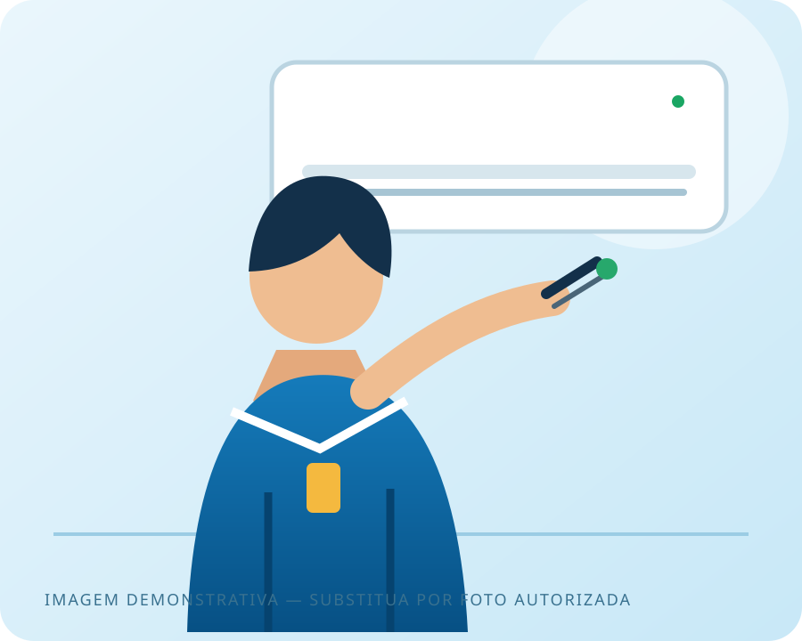
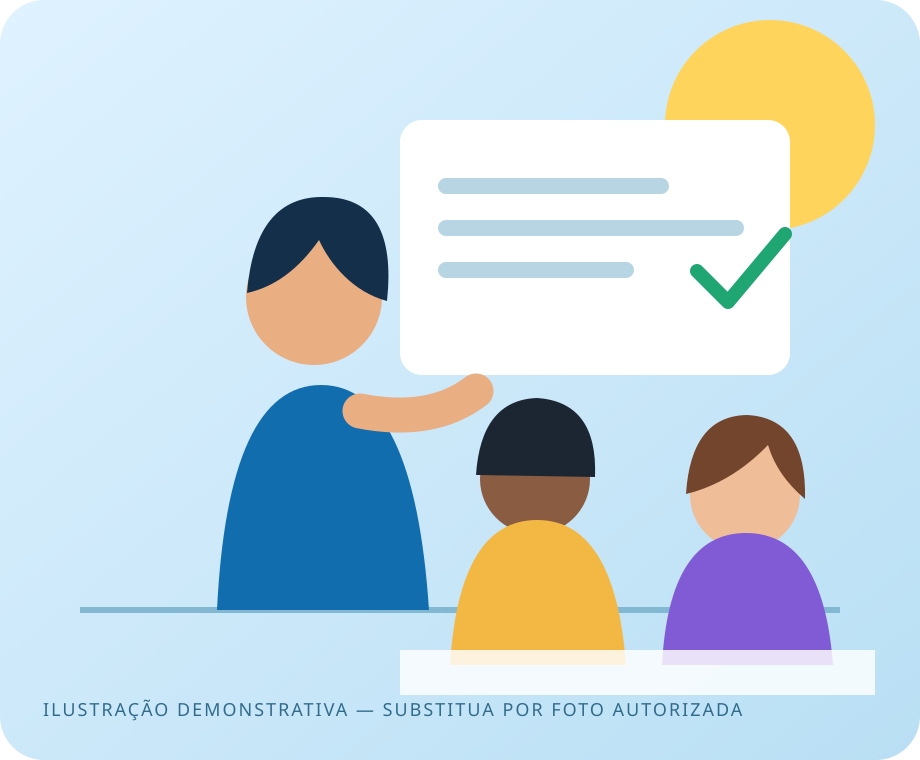
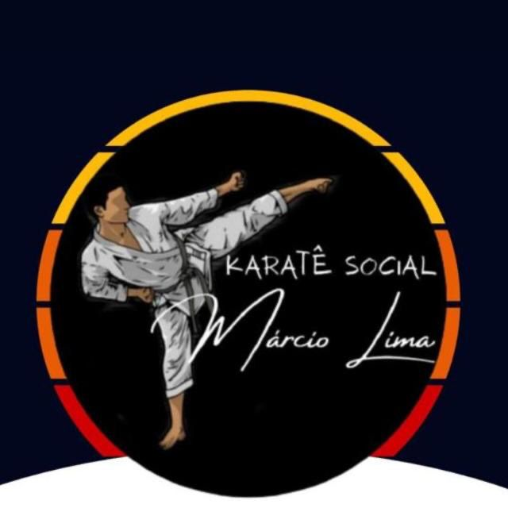

Comunicação pública
Político
Uma presença moderna e humana para apresentar trajetória, propostas e aproximar a campanha das pessoas.
Ver protótipo →Central de Protótipos
Explore possibilidades criadas para diferentes segmentos. Cada projeto pode ser personalizado com sua identidade visual, textos, imagens, serviços, contatos e objetivos.
Conheça os modelosModelos disponíveis
Os exemplos demonstram caminhos de design e comunicação. A entrega final é adaptada à realidade e aos objetivos de cada negócio.
Comunicação pública
Uma presença moderna e humana para apresentar trajetória, propostas e aproximar a campanha das pessoas.
Ver protótipo →
02Serviços técnicos
Uma página clara e confiável, construída para apresentar serviços e transformar visitas em pedidos de orçamento.
Ver protótipo →
03Educação e desenvolvimento
Uma experiência acolhedora para apresentar cursos, metodologia, equipe e transformar interesse em novas matrículas.
Ver protótipo →
04Esporte e comunidade
Uma página para apresentar a causa, aproximar participantes e abrir caminhos para voluntários, apoio e parcerias.
Ver protótipo →Novos segmentos
Saúde, energia solar, alimentação, serviços profissionais e muito mais.
Muito além de um template
Vamos tirar sua ideia do papel?
Seu site será personalizado para comunicar o valor do seu negócio e facilitar o contato dos seus futuros clientes.